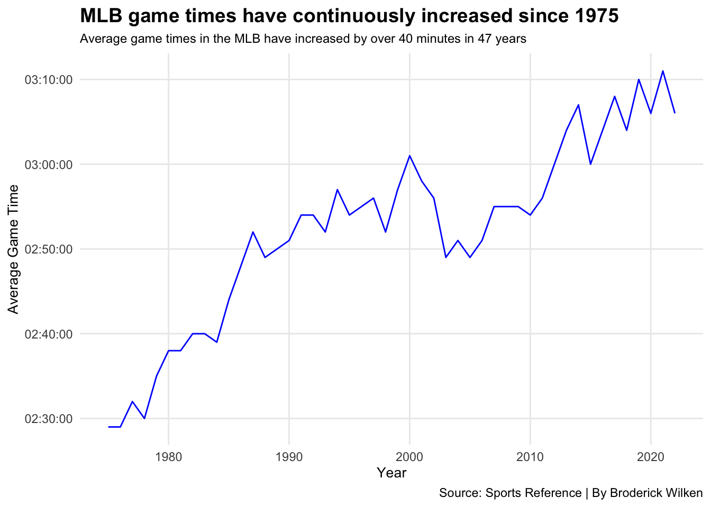

How the pitch clock will save Major League Baseball
baseball
MLB
pitch clock
Author
Broderick Wilken
Published
May 7, 2023
On September 8th, 2022, MLB announced that they would be adding a 15-second pitch clock to their baseball games. Many passionate fans are heavily against the rule change, and a lot of players hate it too. When looking at the business of MLB and the future of baseball, you can see the many reasons why a decision was made to add this rule.
MLB has a massive problem with inactivity during games. In 2021, closing pitcher Aroldis Chapman took almost 30 seconds between pitches with a runner on base. That’s half a minute between every pitch where no action is happening. The average length of a baseball game in 1975 was two hours and twenty-nine minutes. In 2021, the average game was three hours and ten minutes.
Code
library(tidyverse)library(ggalt)library(cowplot)library(gt) ws_ratings75 <-read_csv("22-75_ws_Ratings.csv")ws_ratings <- ws_ratings75 %>%filter(Year >=2000)wscubs <- ws_ratings %>%filter(Year ==2016)nfl_ratings <-read_csv("NFL_SuperBowl_Ratings.csv") %>%filter(Year >=2000) %>%mutate(Viewers =as.numeric(str_remove(`TV Vwrs`, "M")) )nba_ratings <-read_csv("NBA_Finals_Ratings.csv") %>%filter(Year >=2000) %>%mutate(Viewers =as.numeric(str_remove(`Vwrs`, "M")) ) %>%group_by(Year) %>%summarise(avg_vwrs =mean(Viewers) )stanleycup_ratings <-read_csv("Stanley_Cup_Ratings.csv") %>%mutate(Viewers =as.numeric(str_remove(`Vwrs`, "M")) ) %>%group_by(Year) %>%summarise(avg_vwrs =mean(Viewers) )mlb_game_time <-read_csv("MLBGameTimes.csv") %>%filter(Year <2023)mlb_attendance <-read_csv("2023-1990_MLB_Attendance.csv")mlb_yr_attendance <- mlb_attendance %>%filter(Year >=2015) %>%group_by(Year) %>%summarise(avg_yr_att =mean(`Attend/G`),total_att =sum(`Attendance`),avg_time =mean(Time) ) %>%arrange(desc(avg_yr_att))ggplot() +geom_line(data = mlb_game_time, aes(x = Year, y = Time), color ="blue") +scale_y_time() +labs(y ="Average Game Time",title ="MLB game times have continuously increased since 1975",subtitle ="Average game times in the MLB have increased by over 40 minutes in 47 years",caption ="Source: Sports Reference | By Broderick Wilken") +theme_minimal() +theme(plot.title =element_text(size =16, face ="bold"),plot.subtitle =element_text(size =10),axis.title =element_text(size =10),panel.grid.minor =element_blank() )

While many passionate baseball fans love the length of baseball games, it’s struggled to reach a casual audience since the increase of game time. With over 40 extra minutes of inactivity during ball games, it’s not surprising to see that World Series viewership went in the wrong direction.
Code
ggplot() +geom_line(data = ws_ratings75, aes(x = Year, y = Viewers), color ="red") +geom_text(aes(x =2016, y =25000000, label ="2016 Cubs World Series")) +geom_encircle(data = wscubs, aes(x = Year, y = Viewers), s_shape =2, expand =-0.151, color ="black") +scale_y_continuous(labels = scales::unit_format(unit ="M", scale =1e-6)) +labs(y ="Viewers",title ="World Series viewership has continuously decreased since 1975",subtitle ="Average game times in the MLB have increased by over 40 minutes in 47 years",caption ="Source: Baseball Almanac | By Broderick Wilken") +theme_minimal() +theme(plot.title =element_text(size =13, face ="bold"),plot.subtitle =element_text(size =9),axis.title =element_text(size =10),panel.grid.minor =element_blank() )
When looking at this obvious decline, you could argue that the internet, social media, and a wider range of TV broadcast options have caused other sports organizations to experience the same decline. While some organizations have experienced hiccups in viewership, the World Series continues to stick out like a sore thumb.
Code
update_geom_defaults("text", list(size =3))bar1 <-ggplot() +geom_line(data = nfl_ratings, aes(x = Year, y = Viewers), color ="#18453B") +scale_y_continuous(labels = scales::unit_format(unit ="M")) +labs(title ="Other championships are doing fine", subtitle ="Super Bowl") +theme_minimal() +theme(plot.title =element_text(size =15, face ="bold"))bar2 <-ggplot() +geom_line(data = nba_ratings, aes(x = Year, y = avg_vwrs), color ="#18453B") +scale_y_continuous(labels = scales::unit_format(unit ="M")) +labs(y ="Viewers", title ="", subtitle ="NBA Finals") +theme_minimal() +theme(plot.title =element_text(size =15, face ="bold"))bar3 <-ggplot() +geom_line(data = ws_ratings, aes(x = Year, y = Viewers), color ="red") +geom_text(aes(x =2016, y =24500000, label ="2016 Cubs World Series")) +geom_encircle(data = wscubs, aes(x = Year, y = Viewers), s_shape =2, expand =-0.151, color ="black") +scale_y_continuous(labels = scales::unit_format(unit ="M", scale =1e-6)) +labs(subtitle ="World Series", caption="") +theme_minimal() +theme(plot.title =element_text(size =13),plot.subtitle =element_text(face ="bold"),panel.grid.minor =element_blank() )bar4 <-ggplot() +geom_line(data = stanleycup_ratings, aes(x = Year, y = avg_vwrs), color ="#18453B") +scale_y_continuous(labels = scales::unit_format(unit ="M")) +labs(y ="Viewers", subtitle ="Stanley Cup", caption="Source: Baseball Almanac, Sports Media Watch | By Broderick Wilken") +theme_minimal() plot_grid(bar1, bar2, bar3, bar4, ncol =2)
Code
ggsave("image.png")
Saving 7 x 5 in image
The length of games has become such a problem that it’s even hindering attendance numbers. MLB stadiums are well known for incorporating extra activities to do outside of watching the game. This has been a huge reason for their success in producing large attendance numbers through long seasons. With a large increase in game length through the last decade, MLB parks and stadiums are struggling to bring their attendance numbers up.
Code
ggplot() +geom_bar(data = mlb_yr_attendance, aes(x = Year, weight = avg_yr_att), fill ="maroon") +scale_y_continuous(labels = scales::unit_format(unit ="K", scale =1e-3)) +labs(y ="Average Game Attendance",title ="MLB's average game attendance has begun to drop",subtitle ="Excluding the 2020 season, attendance has steadily dropped by almost 5,000 fans in 9 years",caption ="Source: Sports Reference | By Broderick Wilken") +theme_minimal() +theme(plot.title =element_text(size =16, face ="bold"),plot.subtitle =element_text(size =10),axis.title =element_text(size =10),panel.grid.minor =element_blank() )
So, what’s the solution? In short, MLB has already put it in place. While the pitch clock may receive disapproval from players and dedicated fans, speeding up games will create more action and will allow casual fans to enjoy the sport as well. At the end of the day, MLB baseball is a business. If broadcast and attendance numbers aren’t up, something must change to keep the sport alive. In a couple of years, the pitch clock could be the rule to grow the sport and bring it back to the popularity it once had.
There’s only one thing left for MLB to fix… the blackouts.